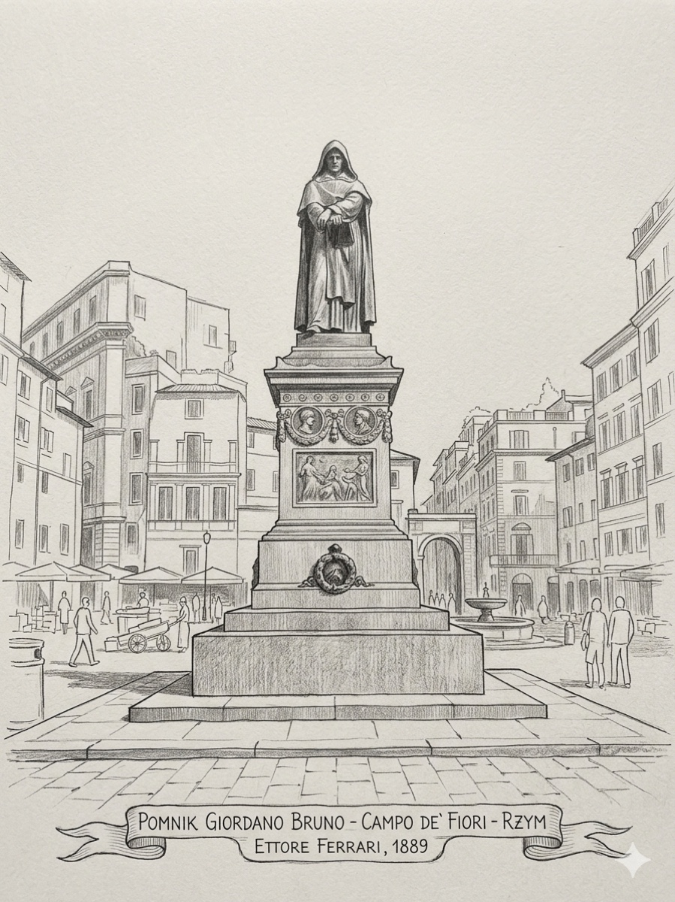

De umbris idearum
„O cieniach idei"
Pierwsze i strukturalnie najambitniejsze dzieło. Teza: pamiętamy nie idee, lecz ich cienie. Pierwsza wersja kół pamięci. Dedykowane Henrykowi III.
„Si vere et ad plenum scientiam habere desideramus, oportet ut ipsam transeamus realiter et per umbras." — De umbris idearum, 1582
Giordano Bruno jest najbardziej radykalną postacią w historii sztuki pamięci. Dla niego mnemotechnika nie była ani sportem, ani nawet retorycznym ćwiczeniem rzymskich mówców. Była metafizyczną drogą — sposobem na ułożenie umysłu w taki sposób, by odzwierciedlał strukturę wszechświata.
Spalony żywcem na Campo de' Fiori 17 lutego 1600 roku, Bruno pozostawił po sobie szereg dzieł, w których próbował odbudować — w sercu kontrreformacyjnej Europy — antyczny i hermetyczny model umysłu jako kosmicznego instrumentu.

Pierwszy myśliciel po Mikołaju z Kuzy, który wyprowadził konsekwencje z heliocentryzmu: skoro Ziemia nie jest centrum, to żadne ciało nim nie jest. Wszechświat nieskończony, niezliczone światy.
Odrzuca podział arystotelesowski. Wszechświat jest jeden, ożywiony (panpsychizm), boski. Bóg jest wewnętrzną zasadą świata — anima mundi.
Człowiek jest imago Dei. Posiada potencjał do stania się magiem — uchwycenia struktury kosmosu i działania na nią.
To jest klucz. Sztuka pamięci nie jest dla niego trickiem na zapamiętywanie list. Jest drogą hermetycznej transformacji — ułożenia umysłu jako mikrokosmosu odzwierciedlającego makrokosmos.
„O cieniach idei"
Pierwsze i strukturalnie najambitniejsze dzieło. Teza: pamiętamy nie idee, lecz ich cienie. Pierwsza wersja kół pamięci. Dedykowane Henrykowi III.
„Pieśń Kirke"
Mnemotechnika splata się z magicznym śpiewem. Wyobrażenia mają moc nie tylko zapamiętywania, ale wpływania na rzeczywistość.
„Pieczęć pieczęci"
Symboliczne obrazy koncentrujące znaczenia kosmiczne. Pieczęć jest metafizyczną figurą.
„Sztuka przypominania"
Praktyczny podręcznik mnemoniczny.
„Lampa trzydziestu posągów"
Trzydzieści posągów-figur reprezentuje strukturę bytu. Pamiętając je w odpowiednim porządku, mnemonik odbudowuje w umyśle ontologię.
„O kompozycji obrazów, znaków i idei"
Pełna teoria obrazu mnemonicznego: jak obraz ma być skonstruowany, by działał poznawczo i magicznie.
Najsłynniejszym narzędziem Bruna są obrotowe koła (rotae). Wzorowane na Ars Magna Ramona Lulla. Bruno przejmuje ideę i zmienia jej zastosowanie.
Wheels were simultaneously machines of memory, magic, logic, and cognition.
Bruno antycypuje Leibniza i współczesne sieci asocjacyjne.
Centralny koncept Bruna. Nie pamiętamy rzeczywistości bezpośrednio. Każdy obraz w pamięci jest umbrą — cieniem idei nadrzędnej.
Pamięć nie jest pasywnym lustrem. Jest aktywnym ekranem, na którym idee rzucają cienie.
Sztuka pamięci to nauka zarządzania cieniami — układania ich tak, by dostać się do idei.
Im bardziej archetypowy obraz, tym silniejszy cień i głębsze powiązanie z ideą.
Bruno wybiera obrazy z mitologii, astrologii, bestiariusza — z kolektywnego skarbca symbolicznego ludzkości. Antycypuje archetypy Junga.
Dla nas dziś „pamięć" i „magia" to dwie różne dziedziny. Dla Bruna były tym samym.
W modelu hermetycznym właściwie skonstruowany obraz ma moc:
To dlatego inkwizycja go zabiła. Nie tylko za herezję kosmologiczną. Przede wszystkim za to, że jego sztuka pamięci była de facto programem nowej religii — religii umysłu.
Mnemoniczny obraz musi być istotny, dynamiczny, emocjonalnie naładowany. Nigdy statyczny.
Postaci z mitologii, znanych historii, filmów działają głębiej niż prywatne skojarzenia.
Świadomość, że struktura wzmacnia pamięć, jest brunońska.
Buduj pałace dla wiedzy, którą chcesz inkorporować w siebie.
Po latach praktyki nie jesteś tym samym człowiekiem. Myślisz inaczej, widzisz inaczej.
„Memoria est rerum thesaurus."
Pamięć jest skarbcem rzeczy.
„Imago est sigillum signaculum signorum."
Obraz jest pieczęcią pieczęci, znakiem znaków.
„Universum est unum, immensum, infinitum."
Wszechświat jest jeden, niezmierzony, nieskończony.
„Mens enim humana, ut speculum, omnia capit."
Umysł ludzki bowiem, jak zwierciadło, ogarnia wszystko.
„Wszystkie rzeczy zwieszają się i zależą od jedności."
— Bruno, De la causa, principio et uno, 1584